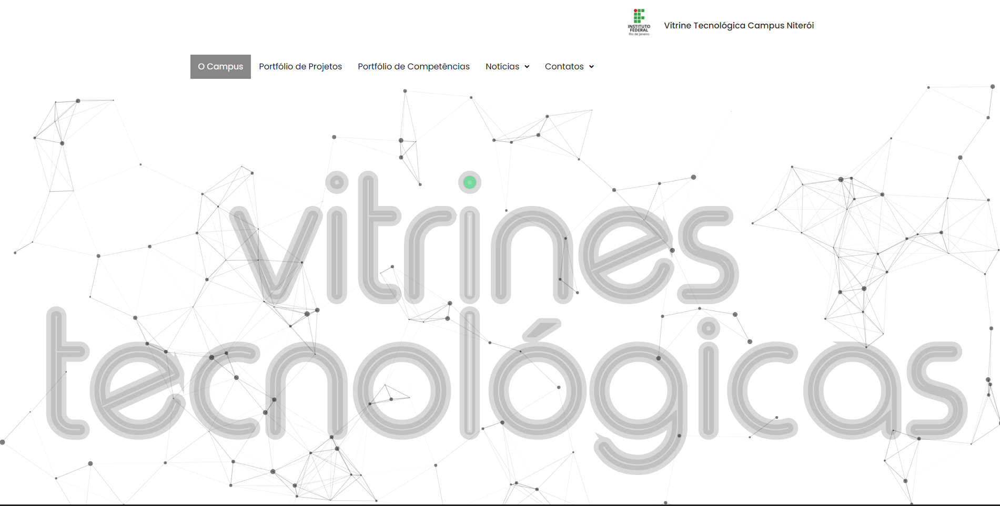
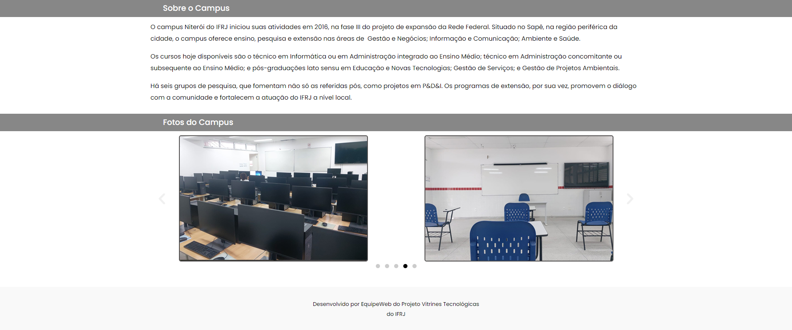
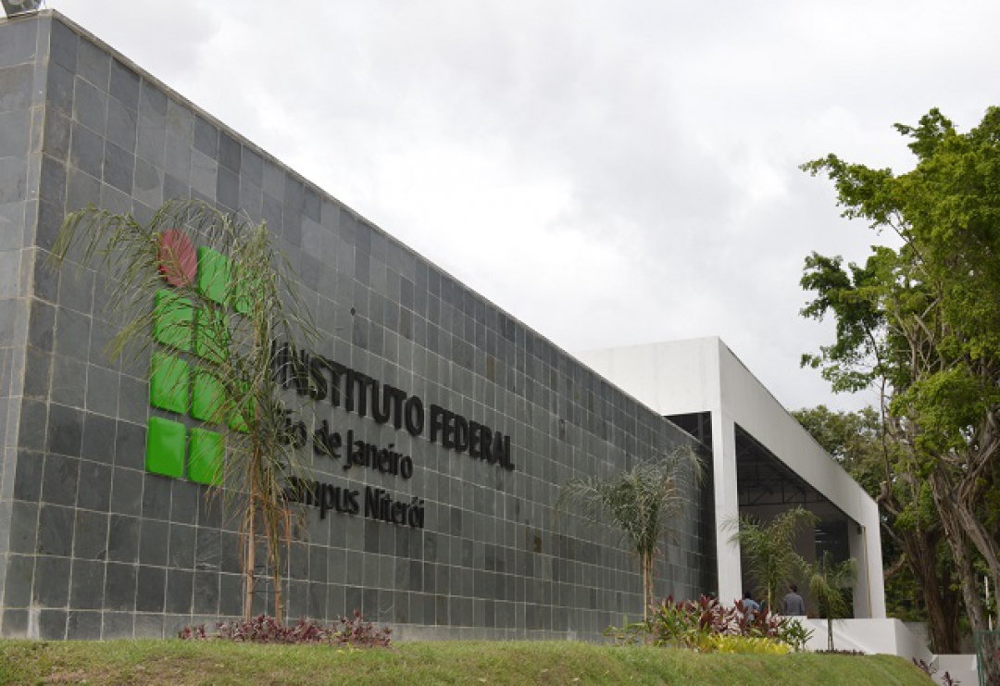

Website Meu Kids
Descrição do Projeto
Esse projeto tem como objetivo estruturar um modelo de vitrine tecnológica para todos os campus do IFRJ. Desse modo, visa-se promover o marketing dos projetos e tecnologias de desenvolvidas no âmbito de cada campus do IFRJ.
Esse foi um dos melhores projetos que fazia parte da minha bolsa de pesquisa pela minha instituição federal. Nela pude desenvolver habilidade de trabalhar em equipe a fim de desenvolver uma página para o Campus Niterói mais responsiva e bela. O projeto durou cerca de 18 meses e muitos ensinamentos foram transmitidos para nós equipe do Instituto Federal de Educação, Ciência e Tecnologia do Rio de Janeiro.
Junto com a equipe de Design Gráfico adquiri experiência com figma e photoshop para a criação de banners para utilização no mundo do marketing digital. Pude explorar da criatividade desse mundo de inovação sem fim, ajudando os membros a trazer mais público-alvo para o site e consequentemente, a conversão de pedidos.
Gostaria de deixar o meu agradecimento e gratidão aos meus professores Davi Fortes, Luiz Oliveira e Hélvio Jerônimo que sempre estiveram comigo durante esses 3 longos anos e que nunca deixaram de me apoiar. Obrigado a todos vocês! Vocês certamente fizeram parte desse começo de jornada na minha carreira.